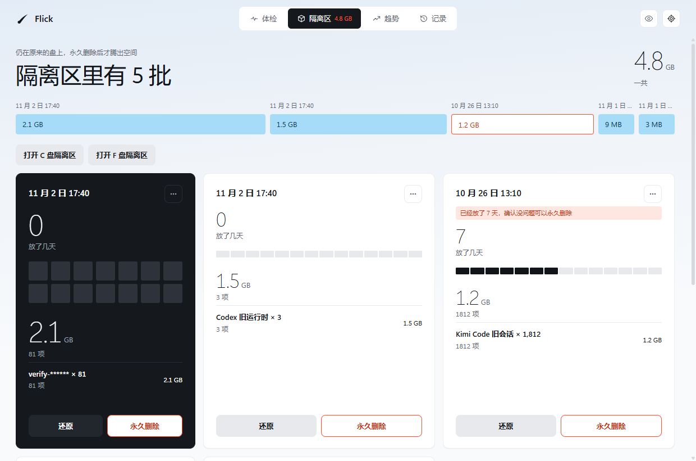

写代码的电脑，总是满得很快。
又不太敢乱删。
做了个清理的小工具，还在调。
它会找出这些：
01 / 07
Claude Code、Codex、Cursor 的旧版本、升级残留、
安装下载、临时目录和日志
02 / 07
npm、pip、yarn、cargo、Gradle 的下载缓存，Playwright 的浏览器
03 / 07
Rust 的 target、__pycache__、
很久没动的 node_modules、测试用的浏览器配置
04 / 07
网页缓存、崩溃转储、显卡着色器缓存、临时文件，
装完没删的安装包、没装上的更新
05 / 07
同一个模板、天天多出来的目录。
给你一段线索，交给 agent 查根因。
06 / 07
Hugging Face 和 Ollama 的模型、浏览器的端侧模型
07 / 07
登录信息与 Cookies、你的源码。
AI 工具的会话记录默认不清，打开后也只清超过保留天数的
先只读体检，再给结论。拿不准的，一张卡，你来定。

清掉的先进隔离区，随时还原。
Flick·Windows·在本机运行